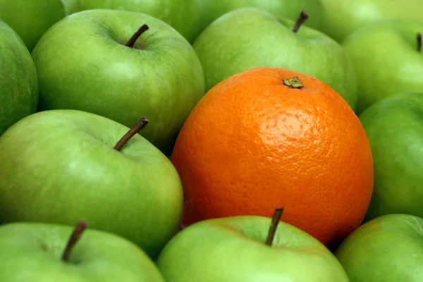

Minimally processed
Foods may be cleaned, cut, frozen, dried, or otherwise prepared while remaining close to their original form.
Food awareness made simple
Learn what food processing means, how different foods are classified, and how simple label habits can help you make informed everyday choices.

Small food choices can become useful habits.
Start with the basics
Food processing refers to the ways foods are changed before we eat them. Processing can be very simple, such as washing or freezing, or much more complex.
Foods may be cleaned, cut, frozen, dried, or otherwise prepared while remaining close to their original form.
Foods may be combined with ingredients such as salt, oil, or other basic ingredients to create traditional food products.
Industrial formulations often contain several ingredients and additives and are designed for convenience, flavor, or long shelf life.
Three practical levels
Understanding how a food is made can provide useful context without requiring an all-or-nothing approach.
Consider whether the main ingredient is still recognizable.
The ingredient list can tell you more than the front of a package.
Focus on your overall eating pattern rather than treating one food as a complete measure of health.
Learning about food processing is a tool for making informed decisions. It does not mean that every packaged food must be avoided.
Learn practical label habits →